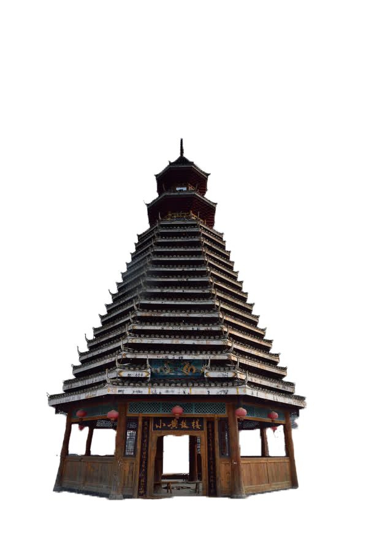
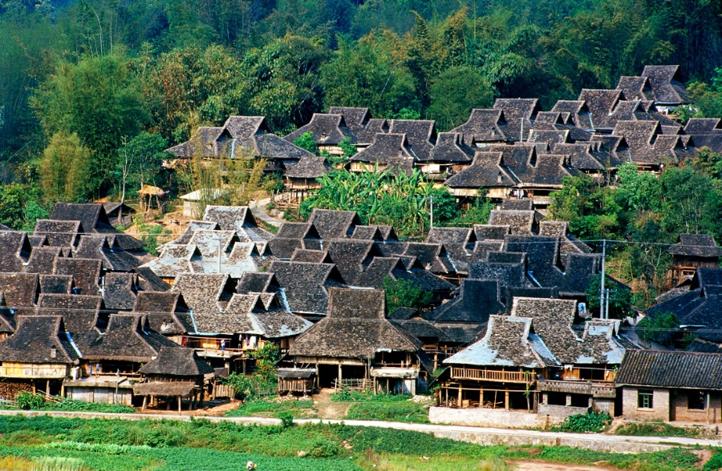
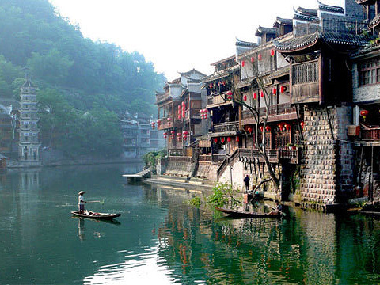

As a living fossil of Ba and Chu culture, it is built by the mountains and rivers, and the silk eaves and rails are self-contained, seemingly random but very elaborate, becoming the inheritance of thousands of years of national culture.
The most distinctive features of the Chuan school of architecture are the Dai bamboo building, the Dong drum building and the west Sichuan hanging foot building. The Dai bamboo building is a special form of dwelling created by the Dai people according to local conditions, and the Dai people have been living in bamboo buildings for more than 1,400 years.
Dai bamboo house
A Dai bamboo house is a type of stilt building primarily constructed of bamboo as the traditional form of housing for Dai people. The lower floor was about seven or eight feet high. Horses and oxen were hitched to the posts. There was a terrace near the upper stairs, which turned into a large long room. The rest of the house was a largely open space with a low roof, sloping on both sides, with eaves to the floor and, generally, no windows. If the eaves were slightly higher, there were small windows on both sides and a door on the back. In the middle of the building was a fireplace, burning day and night. The roof was covered with thatch and the doors and windows are made of bamboo. The construction is easy. It only took a few days to cut down bamboo and gather neighbors together to build it. These houses are perishable and had to be repaired each year after the rainy season. This construction method was conducive to damp roof, and drainage of rain suitable for topography of the PingBa area.
Most Dai live in the Pingba region. Abundant rainfall with an annual average temperature of 21 ℃ makes a very suitable environment for building bamboo structures. Bamboo buildings are easy to set up, and are breathable and cool to avoid miasma, dampness and flooding, while resisting earthquakes and preventing insects and snakes from entering.

Drum Towers
The Drum Towers that loom over every Dong village look like giant cedar trees winding their way to the sky. Drum Towers are a triumph of Dong architecture and are deeply culturally significant to the Dong ethnic minority. They are the place where the elders meet, socialise and, at one point in history, even passed judgement. They are an important social hub in any Dong community and are thus the perfect place to experience authentic Dong culture. There is a Drum Tower in every Dong village and, though they all bear basic similarities, no two towers are ever exactly the same.
Hanging foot tower
Hanging foot tower, also called "hanging tower", is a traditional residence of Miao, Buyi, Dong, Tujia and other ethnic groups, and there are especially many hanging foot towers in southeastern Yu and northern Gui, western Hunan, western E and southeastern Qian areas. Most of them are built by the mountains and rivers, and they are oriented to the west and east, or to the east and west. Hanging foot tower belongs to the dry fence type building, but it is different from the general dry fence. The dry railing should be all overhanging, so it is called semi-dry railing building.
